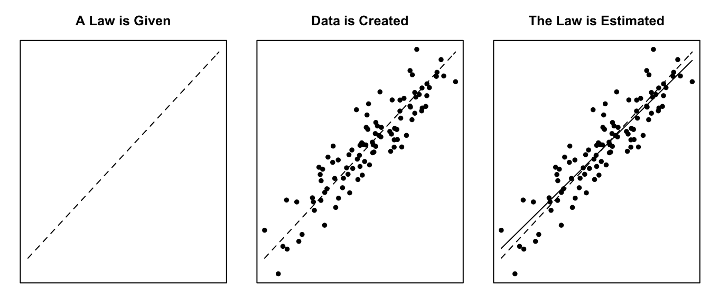

2 The Mathematical Model
Linear regression uses a mathematical function (\(\beta_0 + \beta_1 X_i\)) and a random error term (\(\epsilon_i\)) to describe the regression relation between a response variable \(Y\) and an explanatory variable \(X\).
The Mathematical Model for Simple Linear Regression
\[ Y_i = \beta_0 + \beta_1 X_i + \epsilon_i \quad \text{where} \ \epsilon_i \sim N(0,\sigma^2) \]
In this mathematical model, notice the use of the index \(i\) next to \(Y\), \(X\), and \(\epsilon\). This index value \(i\) is a way of stating that each individual “\(i\)” (like you or me) is assumed to have a unique \(Y\)-value (\(Y_i\)), \(X\)-value (\(X_i\)), and \(\epsilon\)-value (\(\epsilon_i\)). On the other hand, there is no subscript \(i\) for the \(\beta_0\) and \(\beta_1\). That is because the mathematical function is assumed to be the same for all individuals involved in the regression. Similarly, there is no \(i\) on the variance term \(\sigma^2\). That is because the regression model assumes that all individuals in the regression have the same variability of their error terms \(\epsilon_i\). But this is already starting to become confusing. Let’s slow down and take a deeper look at this mathematical regression model.
To really understand the mathematics of the regression model it is useful to consider the following three equations.
2.1 Equation 1: The True Line
The first part of the mathematical model is what we might call the true line. It is most often called the “expected value of \(Y_i\),” denoted by, \(E\{Y_i\}\). (The \(E\) in \(E\{Y_i\}\) stands for “expected value.”) Thus, \(E\{Y_i\}\) is the mathematical function that defines the regression relation between \(Y\) and \(X\). The most important thing to understand about \(E\{Y_i\}\) is that it is an assumption that is made about how the data was “created.” It is something that is typically unknown in real life.
\(\underbrace{E\{Y\}}_{\substack{\text{true mean} \\ \text{y-value}}} = \underbrace{\overbrace{\beta_0}^\text{y-intercept} + \overbrace{\beta_1}^\text{slope} X}_\text{equation of a line}\)
Notice that the equation for \(E\{Y_i\}\) does not include the error term \(\epsilon_i\). Thus, \(E\{Y_i\}\) is simply a mathematical function, in this case a line.
The true line is shown by the dotted line in the graph pictured below. This is typically unobservable. Think of it as “natural law” or “God’s law”. It is some true line that is unknown to us.
The regression relation \(E\{Y\} = \beta_0 + \beta_1 X\) creates the line of regression where \(\beta_0\) is the \(y\)-intercept of the line and \(\beta_1\) is the slope of the line. The regression relationship provides the average \(Y\)-value, denoted \(E\{Y_i\}\), for a given \(X\)-value, denoted by \(X_i\).
Note: \(E\{Y\}\) is pronounced “the expected value of y” because, well… the mean is the typical, average, or “expected” value.
2.2 Part 2: The Dots
The dots, i.e., the data as shown by dots in a scatterplot are assumed to be created by the regression relation plus an error term:
\(Y_i = \underbrace{\beta_0 + \beta_1 X_i}_{E\{Y_i\}} + \underbrace{\epsilon_i}_\text{error term} \quad \text{where} \ \epsilon_i\sim N(0,\sigma^2)\)
This is shown by the dots in the graph below. This is the data. In regression, the assumption is that the y-value for individual \(i\), denoted by \(Y_i\), was “created” by adding an error term \(\epsilon_i\) to each individual’s “expected” value \(\beta_0 + \beta_1 X_i\). Note the “order of creation” would require first knowing an indivual’s x-value, \(X_i\), then their expected value from the regression relation \(E\{Y_i\} = \beta_0 + \beta_1 X_i\) and then adding their \(\epsilon_i\) value to the result. The \(\epsilon_i\) allows each individual to deviate from the line. Some individuals deviate dramatically, some deviate only a little, but all dots vary some distance \(\epsilon_i\) from the line.
Note: \(Y_i\) is pronounced “why-eye” because it is the y-value for individual \(i\). Sometimes also called “why-sub-eye” because \(i\) is in the subscript of \(Y\).
2.3 Part 3: The Estimated Line
The estimated line is the least squares regression line that is obtained directly from a sample of data.
\(\underbrace{\hat{Y}_i}_{\substack{\text{estimated mean} \\ \text{y-value}}} = \underbrace{b_0 + b_1 X_i}_\text{estimated regression equation}\)
The estimated line is shown by the solid line in the graph below. \(\hat{Y}\) is the estimated regression equation obtained from the sample of data. It is the estimator of the true regression equation \(E\{Y\}\). So \(\hat{Y}\) is interpreted as the estimated average (or mean) \(Y\)-value for any given \(X\)-value. Thus, \(b_0\) is the estimated y-intercept and \(b_1\) is the estimated slope. The b’s are sample statistics, like \(\bar{x}\) and the \(\beta\)’s are population parameters like \(\mu\). The \(b\)’s estimate the \(\beta\)’s.
Note: \(\hat{Y}_i\) is pronounced “why-hat-eye” and is known as the “estimated y-value” or “fitted y-value” because it is the y-value you get from \(b_0 + b_1 X_i\). It is always different from \(Y_i\) because dots are rarely if ever exactly on the estimated regression line.
This graphic depicts the true, but typically unknown, regression relation (dotted line). It also shows how a sample of data from the true regression relation (the dots) can be used to obtain an estimated regression equation (solid line) that is fairly close to the truth (dotted line).

Something to ponder: The true line, when coupled with the error terms, “creates” the data. The estimated (or fitted) line uses the sampled data to try to “re-create” the true line.
We could loosely call this the “order of creation” as shown by the following diagram.
par(mfrow=c(1,3), mai=c(.2,.2,.4,.1))
plot(y ~ x, col="white", main="A Law is Given", yaxt='n', xaxt='n')
curve(beta0 + beta1*x, add=TRUE, lty=2)
plot(y ~ x, pch=16, main="Data is Created", xaxt='n', yaxt='n')
curve(beta0 + beta1*x, add=TRUE, lty=2)
plot(y ~ x, pch=16, xaxt='n', yaxt='n', main="The Law is Estimated")
curve(xylm$coef[1] + xylm$coef[2]*x, add=TRUE, yaxt='n', xaxt='n')
curve(beta0 + beta1*x, add=TRUE, lty=2)
| A Law is Given | Data is Created | The Law is Estimated |
|---|---|---|
| \(E\{Y_i\} = \beta_0 + \beta_1 X_i\) | \(Y_i = E\{Y_i\} + \epsilon_i\) | \(\hat{Y}_i = b_0 + b_1 X_i\) |
| The true line is the “law”. | The \(Y_i\) are created by adding \(\epsilon_i\) to \(E\{Y_i\}\) where \(E\{Y_i\} = \beta_0 + \beta_1 X_i\). | The law is estimated with \(\hat{Y}_i\) which is given with lm(...). |
Click open the “Code” buttom below to the right to find code that runs a simulation demonstrating this “order of creation”.
## Simulating Data from a Regression Model
## This R-chunk is meant to be played in your R Console.
## It allows you to explore how the various elements
## of the regression model combine together to "create"
## data and then use the data to "re-create" the line.
set.seed(101) #Allows us to always get the same "random" sample
#Change to a new number to get a new sample
n <- 30 #set the sample size
X_i <- runif(n, 15, 45) #Gives n random values from a uniform distribution between 15 to 45.
beta0 <- 3 #Our choice for the y-intercept.
beta1 <- 1.8 #Our choice for the slope.
sigma <- 2.5 #Our choice for the std. deviation of the error terms.
epsilon_i <- rnorm(n, 0, sigma) #Gives n random values from a normal distribution with mean = 0, st. dev. = sigma.
Y_i <- beta0 + beta1*X_i + epsilon_i #Create Y using the normal error regression model
fabData <- data.frame(y=Y_i, x=X_i) #Store the data as data
View(fabData)
#In the real world, we begin with data (like fabData) and try to recover the model that (we assume) was used to created it.
fab.lm <- lm(y ~ x, data=fabData) #Fit an estimated regression model to the fabData.
summary(fab.lm) #Summarize your model.
plot(y ~ x, data=fabData) #Plot the data.
abline(fab.lm) #Add the estimated regression line to your plot.
# Now for something you can't do in real life... but since we created the data...
abline(beta0, beta1, lty=2) #Add the true regression line to your plot using a dashed line (lty=2).
legend("topleft", legend=c("True Line", "Estimated Line"), lty=c(2,1), bty="n") #Add a legend to your plot specifying which line is which.